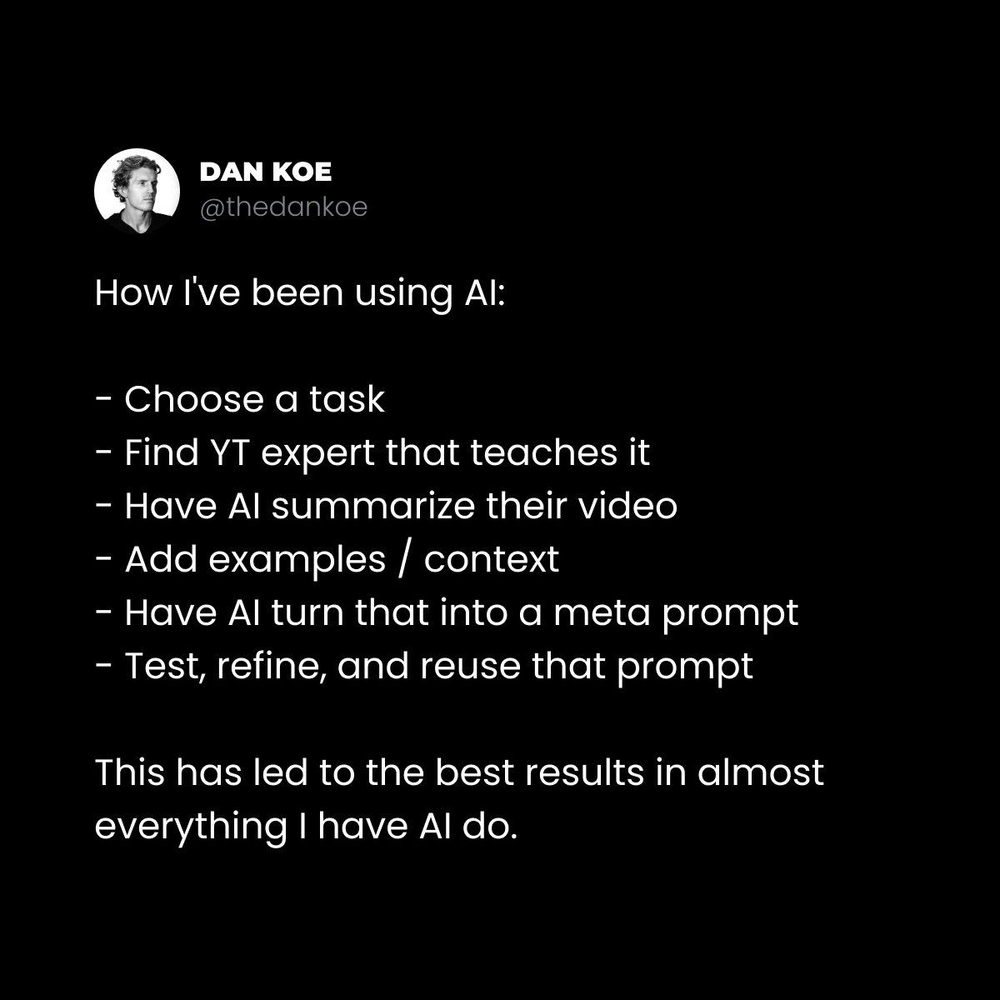

But if you are a high agency individual, that doesn’t matter. Why? Because you aren’t dependent on a specific skill for your success. You aren’t a specialist. You didn’t focus your mind - preventing you from learning outside of that focus - on the status of a high paying job or degree. You have a vision, and you understand that in today’s world, you can acquire any skill or any knowledge to achieve the life you want.
Unfortunately, if your parents did not cultivate the skill of agency in themselves, they probably did not pass it off to you. And unless you have deliberately (and painfully) gone through the process of relearning, you have some work to do before you feel in control of your future.
The most important skill to learn that will be relevant now, in 10 years, and until you die is agency. Because if you can set your own life direction, do what is required to achieve it, and avoid the infinite number of temptations and distractions in today’s world, you will never be at risk of replacement (and if you do get replaced, it doesn’t matter, because you can quickly adapt).
Conformity is a stage of cognitive development where your mind operates entirely through cultural programming, judging truth based on popularity and acceptance by others rather than through your own direct experience or independent investigation.
如果你认真想一想，就会明白，这是过上好生活的最大威胁。
If you really think about that, you understand that this is the greatest threat to living a good life.
When you are born, your mind is like a new computer. There is a base operating system, but the hard drive has nothing on it. For the first 20 years of your life, you do not think independently. And that’s okay. Nobody does, no matter how independent you think you are, because most of the time that’s just another form of conformity.
In the Spiral Dynamics and 9 stages of ego development models, they show that around 50% of the population is at the conformist stage of development. Meaning half the population lacks the cognitive development for genuine agency.
Conformity stems from survival. Humans don’t only survive on the physical level like animals (reproducing genes), but on the psychological level (reproducing beliefs, ideas, and information).
If you work a job, you have a low degree of agency in that domain of life because if that job were to go away, your survival is at stake. So you must conform.
If you have hard-set beliefs that bind your identity to a specific religion or political party, you do not have a high degree of agency, because your ideas of good and bad originate from your culture, rather than personal scrutiny and discovery.
科技圈和商业圈里人人都爱谈"高能动性"，然而那本身也是一种从众——顺从科技和商业圈里流行的东西。
Everyone in the tech and business space loves to talk about being “high agency,” yet that too is a form of conformity to what is popular in the tech and business space.
话说回来，这封信本身也带有一定程度的从众。我们每个人都在某种程度上是从众者。
That said, this letter has a degree of conformity. We are all conformists in some way.
Now, what does true agency look like? And how can we start to develop it in ourselves so our emotions, finances, and opportunities in life are not dictated by someone else?
To have agency is to be the subject of a sentence, rather than its direct object. It is the tendency to act, rather than wait to be acted upon.
– Devon Eriksen
能动性（agency）的字面意思是"处于行动或运作中的状态"。
Agency literally means “the condition of being in action or operation.”
用来形容一个人时，它的意思是"在没有外部提示、指示或许可的情况下，主动朝目标采取行动的倾向"。
When used to describe a person, it means “the tendency to initiate action towards a goal without outside prompting, instruction, or permission.”
But when we look at what actually makes people successful, it isn’t just acting toward a goal. Anyone can start a business, but that doesn’t mean they will reach any form of success. Most of them don’t, in fact, because they’re missing one critical piece of the puzzle:
如果某件事行不通，你就反思情况、做出调整、再试一次，一遍又一遍，直到抵达你的终点。
If something doesn’t work, you reflect on the situation, make an adjustment, and try again, over and over until you reach your end destination.
Agency, then, in my opinion, is not only action, but an undying commitment to iteration. Learning and doing in unison. Making mistakes and correcting mistakes without being seduced back into a comforting conformity because “it’s not working.”
没错，我说的就是你们——那些开始写作、两周后就放弃的人。
Yes, I’m talking to you, people who start writing and quit after 2 weeks.
2）高能动性的人把人生当作一场巨大的实验。
2) High agency people treat life as one giant experiment.
低能动性的人有一个典型特征："员工心态"。
Low agency people can be characterized by the “employee mindset.”
They are assigned a task, often with some form of status or credential that triggers the part of their brain that craves acceptance by the tribe, and their decision-making is immediately compromised. They can no longer think outside of the confines placed upon them.
高能动性的人是自己人生的科学家。
High agency people are scientists of their own lives.
他们有一个想法。
They have an idea.
他们给自己设定目标。
They set their own goal.
他们提出一个关于如何实现它的假设（有根据的猜测）。
They create a hypothesis (an educated guess) on how to achieve it.
他们测试、摆弄、研究，并朝目标发起尝试。
They test, tinker, research, and make an attempt toward the goal.
They fail. A lot. But since this is an experiment, that’s a part of the process. They expect to fail, because how else are they going to narrow down what doesn’t work until they find what does?
This is a significant issue with how people perceive success today. They are promised something by someone else, like a job that pays a lot of money or a business that can be built quickly to make millions of dollars.
You want to become high agency because you believe those actions will make a positive difference in your life. You’re trying to achieve a goal. Goals come in three forms:
简单目标——我们每天都在做的事，或者凭现有技能和资源就能实现的事。
Easy goals – things we do every day, or things we can achieve with the skills or resources we already have.
困难目标——我们现在做不到，但只要获得合适的技能和资源，最终能做到的事。
Difficult goals – things we can’t do right now, but that we can eventually do if we acquire the right skills and resources.
Impossible goals – something that is either outside of the realm of possibility in reality, or something we can’t do until we complete the series of difficult goals that allow us to see impossible goals as possible.
低能动性的人深受一种信念体系之苦，这种信念体系扭曲了他们对困难目标的认知。
Low agency people suffer from a belief system that skews their perception of difficult goals.
If you take Seligman’s dog experiment, you can see how society does just this to most people. In this experiment, dogs were exposed to unavoidable electric shocks, making them feel as if they had no control over their environment. Later, when they were placed in a situation where they could simply jump over a small wall to escape the shocks, the dogs did not attempt to do so. They whined and bore the shocks even when escaping was easily available.
So, the goal of reaching the life you want may be difficult, but you were trained to believe that there is no way to achieve it, so you don’t even try. So much so that your mind won’t even let you consider it as an option. You bear the shocks of the default path.
不过，能动性是有办法练习的。
There is a way to practice agency, however.
但除非你深刻意识到这一切如何适用于今天的世界，否则具体的练习步骤也没什么用。
But the practical steps to do so won’t matter unless you have a deep awareness of how this applies to today’s world.
I send out letters like these 1-2x a week. If you don’t want to miss them (because who knows what the algorithm will show you), join here. You can also read my book free, other letters, etc.
【配图】（原文此处为分隔线）
二、AI 对高能动性的人不是威胁
II - AI is not a threat to the high agency.

【配图】
如今，你能获取实现任何目标所需的一切知识。
You now have access to any knowledge you would ever need to achieve whatever you want.
然而……人们依然拿这些信息什么都不做。
And yet... people still do nothing with that information.
Success is now easier than ever, yet the people who weren’t going to achieve it still aren’t going to achieve it. Meaning, this was never about “access” or “equal opportunity.” It’s always been about agency.
High agency people, on the other hand, will outpace everyone else by 10x, because they act without permission, and the barriers to action are now close to non-existent. If you can’t achieve a big goal due to limited money or resources, you can set a smaller, stepping-stone goal that will help you acquire that money or resource.
所有人都在担心同一件事。
Everyone is worried about the same thing.
坦白说，他们之所以害怕，只是因为他们无法清晰地思考。
And frankly, they’re only afraid because they can’t think clearly.
我们来看一个典型例子："AI 会生成海量内容，人类创作者将毫无胜算。"
Let’s look at a prime example: AI is going to create so much content that human creators don’t stand a chance.
首先，AI 是一个工具。
First, AI is a tool.
工具需要有人为了特定目的去使用它。
Tools need someone to use them for a specific purpose.
当然，任何人都可以让 AI 生成一条爆款帖子，或者从一期播客里生成一千条爆款帖子，AI 还能按爆款潜力给它们排序，但那又有什么用？你可以收获一堆点赞和粉丝，但变现呢？忠诚度呢？还有那些真正让一个品牌运转起来的东西呢？没错，你也可以让 AI 帮你做这些，但这时你做的已经是完全不同的事情了。你在学习。你在统筹实现一个更大的愿景，而这和你亲自去做并没有太大差别。做决策的依然是你。
Sure, anyone and everyone can ask AI to generate a viral post, or a thousand viral posts from a podcast, and the AI can rank them based on viral potential, but what good is that? You can get a bunch of likes and followers, but what about monetization? Loyalty? Or any of the things that actually make the brand work? Yes, you can ask AI to help with that, but now you’re doing something totally different. You’re learning. You’re orchestrating the realization of a larger vision, and it’s not too different from doing it yourself. You are still the decision maker.
当然，AI 可以按指令生成一张漂亮的图片，但一个心怀愿景、把 AI 当作实现愿景的垫脚石的人，和一个只是想快速弄张图的人，有着天壤之别。许多艺术家用 AI 打初稿。许多艺术家仍会把它导进 Photoshop，做一些小调整，加上自己的风格。总的来说，AI 暴露出了创作过程中真正重要的是什么。
Sure, AI can generate a beautiful image on command, but there is a huge difference between someone who has a vision and uses AI as a stepping stone to execute on that vision and someone who simply wants to create a quick image. Many artists use AI for first drafts. Many artists still take it into Photoshop to make the small tweaks that add their flair. As a whole, AI has exposed what really matters in the creative process.
当你让 AI 替你做所有决定时（换句话说，你让它根据互联网上成千上万种意见去猜什么行得通），作品就没有一条贯穿的主线。没有主题。没有个性。没有愿景。没有语境。而这恰恰就是创作者的本质：语境创作者（context creators），而不是内容创作者（content creators）。没有语境，内容就毫无意义，AI 生成的东西也是一样。
When you ask AI to make all of the decisions for you (in other words, you ask it to guess what works based on hundreds of thousands of opinions on the internet), there is no throughline. There is no theme. There is no personality. There is no vision. There is no context. That’s what creators are. Context creators, not content creators. The content is meaningless without context, and AI generations are the same.
除了脑腐内容（brain rot）和梗图（有些真的很棒，哈哈）——它们唯一擅长的就是把你留在平台上，直到你看到广告，好让社交平台赚钱（而这些平台本身是有主线和品牌愿景的，是由特定的人为了特定的目的打造的，用没用 AI 都一样）——除此之外，除非使用 AI 的人本来就擅长创作内容，否则 AI 几乎毫无用处。
Aside from brain rot and memes (there are some great ones out there lol), which are only good at keeping you on the platform until you see an advertisement so the social media platforms can make money (which then have a throughline and brand vision, crafted for a specific purpose by a specific person using AI or not), AI is practically useless unless the person using AI is already good at creating content.
这下你想通了吗？
Did that click for you?
99% 的 AI 生成内容都会直接沉到桶底，因为如果某条内容奏效了，那它的价值就在那里，是不是 AI 生成的都无关紧要——因为它多半是由一个人在统筹，把自己的个人语境传递给了 AI。
99% of AI-generated content goes straight to the bottom of the barrel, because if the content worked, then the value is there, and it doesn’t matter if AI generated it or not, because it was more than likely orchestrated by a human who is passing off their personal context to it.
创业时，你必须有一个由 AI 帮你执行的品牌使命，而且你必须不断迭代。
When building a business, you must have a brand mission that AI helps you execute, and you must iterate constantly.
When writing a book, you must maintain control of all minor details, and beyond that, you must still be able to get people to read it (audience, marketing, sales), which the book is not going to do itself.
创作艺术时，你仍然必须有一个你试图将其变为现实的想法。
When creating art, you must still have an idea that you are attempting to bring into reality.
换句话说，什么都没变，人们只是讨厌新东西，而这个新东西正照亮了那些原本就重要的东西。如果你没法用 AI 创作艺术，那你从一开始就不是艺术家。你只是擅长用 Photoshop 这样的工具罢了。工具会被取代。愿景和能动性不会。
In other words, nothing has changed, people just hate what’s new, and that new is shining a light on what mattered in the first place. If you can’t create art with AI, you were never an artist to begin with. You were simply good at using a tool like Photoshop. Tools get replaced. Vision and agency do not.
Schools were created to enslave the brightest minds by promising the prestige of specialization so they remained narrow minded and didn’t overthrow the true rulers. – Purpose & Profit
Whenever I write about becoming a generalist, polymath, or someone with multiple interests, people come out of the woodwork to tell me how wrong I am (all while never providing a coherent argument as to why being a specialist is better).
他们接着搬出莎士比亚的经典名言："样样通，样样松。"（A jack of all trades is a master of none.）却不知道这是一句误引，它的完整版结尾是："但往往胜过只精一样的人。"（But oftentimes better than a master of one.）（译注：这句话的出处与"完整版"在英语世界有争议，通常并不被认为出自莎士比亚；此处照原文翻译。）
They proceed to quote the classic from Shakespeare, “A jack of all trades is a master of none.” Yet they are unaware of the fact that it is a misquote, and ends with “But oftentimes better than a master of one.”
Some may think Shakespeare was a specialist playwright, but that was simply a vessel. He had to have a deep understanding of human nature (character development), language, classical literature, stagecraft, religion, philosophy, military tactics, music, navigation, the natural world, social structures, the body and medicine... the list goes on. He was a synthesizer who used his diverse interests as his edge.
A Fortune 500 CEO, Charles Darwin, Steve Jobs, or any other visionary or strategist who achieves outsized success has a specific vision that they then learn and take the necessary steps to achieve. Do not confuse a specific vessel or niche as being a specialist.
Specialists are attached to a skill. Skills evolve and get replaced as technology advances. We don’t see it this way now, but Photoshop disrupted the art and design industry. AI is doing the same, and those who are experts at skills rather than true artists are going to be pissed off, as you can already see. Generalists, on the other hand, focus on the goal and do what’s necessary (including changing that goal) so that they can thrive in anything they do.
我再展开讲讲。
Let me break this down further.
人类是工具的制造者。
Humans are tool builders.
我们能在任何生态位中茁壮成长，因为我们能适应它。
We thrive in any niche because we can adapt to it.
如果你把一头狮子放到阿拉斯加，把一头北极熊放到热带草原，它们都会死。
If you were to put a lion in Alaska and a polar bear in the Savannah, they would die.
如果你把一个人放到其中任何一处，他会搭建住所、缝制衣服、捕猎觅食，因为他能制定计划并加以执行。
If you were to put a human in either, they would build shelter, clothing, and hunt for something to eat because they can create a plan and execute on it.
The reality is, to educate large numbers of immigrant children in the 1800s (Industrialization), America adopted the Prussian education model, which was not education at all, but a weapon of mass conformity. It was designed to create obedient soldiers, compliant citizens, civil servants, and well-behaved workers through mandatory attendance, training for teachers, testing for students, and the concept of grade levels. Sound familiar?
社会希望你简单、可预测、容易归类。
Society wants you simple, predictable, and easy to categorize.
Because that’s what best serves their interests. That’s what best serves the profits of organizations. If you understand systems, you understand that the system takes the shape of that which most benefits the end goal, which, in society’s case, is keeping you sick and dumb, whether it’s intentional or not. It doesn’t have to be a conspiracy theory for the system to naturally take shape of the desires of humans at the top of these pyramids.
If slaves were expected to do one thing throughout the entirety of their lives so that their minds were closed to learning more (specialists), then you, as a free individual, are meant to do many things throughout your life.
你反抗出生时就被安排好的那条路。
You revolt against the path you were set on at birth.
你追求以兴趣为基础的教育。
You pursue an interest-based education.
你明智地运用你的各项能力。
You use your capabilities wisely.
四、人类的 5 种能力
IV - The 5 human capabilities
能动性固然很好，但我们仍然受物理定律的约束。
Now, agency is great, but we are still bound by the laws of physics.
这就引出了另一个随着 AI 炒作周期潮起潮落的巨大担忧：
This creates another giant worry that ebbs and flows with AI hype cycles:
AGI（通用人工智能）会让人类智能变得无关紧要吗？
Will AGI (artificial general intelligence) make human intelligence irrelevant?
Are human capabilities limited? Or are they infinite? As high-agency generalists, do we not have the capability to learn anything and do anything that our genes do not limit us from learning or doing? We thrive in many niches because we adapt with knowledge and tools. The fundamental question about human capabilities is: are there any limits on what we can think and how we think?
If the main limit is the processing speed and memory of our brain, can that not be augmented? And when AGI becomes a thing, will that not be ever more possible? Will we not be AGI? Are we not already AGI? Will we not be amongst the superintelligent?
推测这些事情很有趣，而且离它真正发生还有一段时间，所以我想聚焦在近期的未来。
It’s fun to speculate about these things, and we have some time before it happens, so I want to focus on the near future.
Is there any limit to what we can compute? No, because once you have a universal computer that we can hold in our hands, it’s just a matter of time and memory to compute anything. We have that, and if AGIs or aliens had that, they would have the same repertoire of computation as us, and no advantage over us.
You may say that AGI will be able to compute much faster, but that does not speed up the pace of the physical transformation that allows things to be built. You can have an idea for building a particle collider, but you still need the resources to build it.
2）转化（物理层面）：
2) Transformation (physical):
转化就是创造。只要有正确的知识，我们就能把原材料变成火箭。
Transformation is creation. We turn raw materials into rockets given the right knowledge.
Human hands and bodies seem to be especially good at creating anything given a specific sequence of operations. We’ve built spaceships and telescopes. Meaning that we can build the thing that builds the thing. We are generalists that build tools to thrive in any environment. We are not animals bound to one niche.
问题是：
The question is:
当这些基本操作以正确的方式串联起来时，它们能做的事情有没有极限？
Is there a limit to what these basic operations can do when strung together in the right way?
Again, the answer is no. If humans could teleoperate a gorilla, there is a sequence of steps it can take to build a rocket given time. And no, I’m not saying a single gorilla. Imagine if Elon were operating the gorilla. What would he do?
The thing here is time. Transformation takes time, and a singularity won’t change that just as the Enlightenment or the Big Bang didn’t. Time is a compression algorithm that prevents everything from happening at once, and the Enlightenment and Big Bang clearly didn’t put rockets in the sky. In other words, AGI may be able to compute faster than our brains, but that doesn’t mean it will be able to create the thing any faster than humans. You can have an idea for building a rocket, but you still need to acquire the resources to build the rocket.
到目前为止，对 AGI 的担忧似乎源于对现实本身的根本误解。
So far, the AGI worry seems to stem from a fundamental misunderstanding of reality itself.
After computation and transformation, there is variation, selection, and attention, which have to do with navigating idea space (or the unknown), or how we create knowledge. We can compute and transform, but do we have limits on the knowledge that allows us to do so?
The first is to make specific things happen, preferably good things rather than bad. The second is to capture patterns in reality. This allows us to store information in an efficient way so that we aren’t always starting from scratch in our pursuits. We understand big-picture concepts like the sun rising and falling each day and seasons changing every so often.
Without this understanding, much of our lives would fall apart. Capturing patterns allows us to plan by proximity. We understand that we would freeze to death in a cold environment, so we use deposits of knowledge like a jacket and hotel to keep us warm while we travel.
Think of idea space, or the unknown, as a universal map with light and dark spots. The light spots are areas you’ve explored. The dark spots are where your potential lies.
This map is a surface area for ideas that can be discovered and tested against reality to verify their validity. When those results do not move you closer toward your goal, or move you further from that, a problem is revealed, and you must error correct toward the goal.
变异
Variation
为了生存、为了实现我们下定决心要做的事，我们能想出的新点子数量有没有上限？
Is there a limit to the number of new ideas we can come up with to survive and achieve what we set our minds to?
With computation, we can navigate the entire space of ideas. With agency, we can take any step within that space and eventually stumble across a good idea (after many bad ones). With creation, we can move in unique ways, like flying over a forest rather than walking through it.
So, we can understand anything, create anything, and discover an infinite set of new ideas to solve an infinite string of problems. Again, AGI can do the same. We are both bound by the laws of nature, but any possibility within that is within reach.
选择
Selection
我们能想出任何点子，但我们能找出好的那些吗？
We can come up with any idea, but can we find the good ones?
The potential problem here is that it is difficult to make cumulative progress without learning from mistakes. It wouldn’t be fun to start over from scratch if we wanted to build an electric car after a gas car. We wouldn’t be very developed as a species.
As universal cybernetic systems, we can become more efficient at navigating idea space to avoid wandering lost. We error correct. No fundamental difference here either.
When a problem occurs, where does your attention go? If you want to build a rocket, does it help to ask the old Gods to do it for you? Or can you change lenses to view the situation in a way that allows you to perceive opportunities?
While this is a massive problem for humans (paradigm lock and attaching to ideology) we do have the capability to change where our attention goes when problems come up. We can put on a spiritual lens to find peace and a scientific lens to find progress.
Identifying with a purely ascending and “spiritual” philosophy is no different from being an incomplete system that will fail to solve certain sets of problems. Spirituality is a great lens or tool, but a bad master, and not the end-all be-all.
AGI does not seem like it can surpass us in any way unless it bends what is possible (we would have a very different problem on our hands at that point).
——C. 蒂·阮（C. Thi Nguyen），《游戏：作为艺术的能动性》（Games: Agency As Art）
In ordinary practical life, we usually take the means for the sake of the ends. But in games, we can take up an end for the sake of the means. Playing games can be a motivational inversion of ordinary life.
– C. Thi Nguyen, Games: Agency As Art
You develop agency by practicing other people’s agencies until you are able to create your own. In other words, you play by the rules until you can create your own, meaning the most important high agency trait is to know when to break free.
总的来说，能动性不是一种特质，而是一种艺术形式。
Agency, as a whole, is not a trait but an art form.
观察这种艺术形式的最佳场所，就是游戏。
The best way to observe that art form is in games.
When you play a game, you almost always start with the goal in mind: win the game. From there, you have various quests, but those quests must be executed in order of your experience. You start at level one, then advance to level 2 and beyond, and once you reach a much higher level, you are able to look back with all of your knowledge and skill to devise how you are going to reach the next goal.
The higher level you are, the more fun life becomes, because you get to choose the challenging yet meaningful goal you take on next. It is not assigned to you as if you were in a tutorial phase.
这正是为什么你的人生可能会让你感到失控。你升到了 10 级（童年、学校、工作），但现在卡住了。游戏不再好玩，因为游戏的制作者无法从你升到更高等级中获益，所以他们诱导你留在原地。你陷入了无聊与焦虑的循环：你所有的任务都重复、无脑，而任何进一步的挑战都会让你不知所措，因为你不知道如何学习。你人生中最重要的那场 Boss 战，就是走自己的路。
That’s exactly why your life may feel out of your control. You got to level 10 (childhood, school, job), but now you are stuck. The game isn’t fun anymore because the game makers don’t benefit from you going to a higher level, so they incentivize you to stay there. You get trapped in a loop of boredom and anxiety because all of your tasks are repetitive and mindless and any further challenge overwhelms you because you do not know how to learn. The most important boss fight of your life is pursue your own path.
Anything. Because nobody actually knows what they want. Instead, they deeply understand what they don’t want, and allow that to create an aim for their future. From there, they have a direction to move in. Set a goal to make that aim more practical, then do the following.
Experiment with various techniques. Implement the processes you learn and attempt to get results. (By the way, most of these won’t work for you, and that’s okay).
Pass it down to others. The teacher learns more than the student, and you don’t truly understand it if you can’t explain it in a way that is beneficial to someone else.
First, it’s where the attention is. You’re probably not going to build your life’s work by advertising on the radio or sending handwritten letters to prospects. You’re going to write content, obviously.
Aside from being an accessible, low-risk, and low-cost vessel to do what you want, learning and agency are baked in. It is the great modern game.
你可以从别人的内容、指南和课程中研究他们的能动性。
You can study other people’s agencies in their content, guides, and courses.
你可以公开做实验并获得直接反馈——你能迅速分辨什么行得通、什么行不通。
You can experiment in public and get direct feedback - you can quickly identify what works and what doesn’t.
你被迫去学习一套面向未来的技能组合（写作、说服、营销、销售、讲故事等）。
You are forced to learn a future-proof skill stack (writing, persuasion, marketing, sales, storytelling, etc).
你必须真正搞懂你想在互联网上谈论的东西。
You must truly learn what you want to talk about on the internet.
至于你想拿这些信息做什么，就由你自己决定了。
I’ll let you decide what you’d like to do with that information.
——Dan
– Dan
English original (from the X article data)
Most skills will be irrelevant in 10-20 years.
Well, maybe... That's what everyone's saying at least, and it definitely feels that way.
But if you are a high agency individual, that doesn’t matter. Why? Because you aren’t dependent on a specific skill for your success. You aren’t a specialist. You didn’t focus your mind - preventing you from learning outside of that focus - on the status of a high paying job or degree. You have a vision, and you understand that in today’s world, you can acquire any skill or any knowledge to achieve the life you want.
Unfortunately, if your parents did not cultivate the skill of agency in themselves, they probably did not pass it off to you. And unless you have deliberately (and painfully) gone through the process of relearning, you have some work to do before you feel in control of your future.
With that said:
The most important skill to learn that will be relevant now, in 10 years, and until you die is agency. Because if you can set your own life direction, do what is required to achieve it, and avoid the infinite number of temptations and distractions in today’s world, you will never be at risk of replacement (and if you do get replaced, it doesn’t matter, because you can quickly adapt).
I want to share 5 ideas on what agency is, why it matters more than ever, and how to practice it so you can get what you want in life.
I - Agency is the ability to iterate without permission.
It is only those who are in constant revolt that discover what is true, not the man who conforms, who follows some tradition.
– Krishnamurti
To understand what a high agency individual is, it is helpful to consider what it is not.
Agency is not mechanical conformity.
Conformity is when your mind is still connected by an umbilical cord to society.
Conformity is a stage of cognitive development where your mind operates entirely through cultural programming, judging truth based on popularity and acceptance by others rather than through your own direct experience or independent investigation.
If you really think about that, you understand that this is the greatest threat to living a good life.
When you are born, your mind is like a new computer. There is a base operating system, but the hard drive has nothing on it. For the first 20 years of your life, you do not think independently. And that’s okay. Nobody does, no matter how independent you think you are, because most of the time that’s just another form of conformity.
In the Spiral Dynamics and 9 stages of ego development models, they show that around 50% of the population is at the conformist stage of development. Meaning half the population lacks the cognitive development for genuine agency.
Conformity stems from survival. Humans don’t only survive on the physical level like animals (reproducing genes), but on the psychological level (reproducing beliefs, ideas, and information).
If you work a job, you have a low degree of agency in that domain of life because if that job were to go away, your survival is at stake. So you must conform.
If you have hard-set beliefs that bind your identity to a specific religion or political party, you do not have a high degree of agency, because your ideas of good and bad originate from your culture, rather than personal scrutiny and discovery.
Everyone in the tech and business space loves to talk about being “high agency,” yet that too is a form of conformity to what is popular in the tech and business space.
That said, this letter has a degree of conformity. We are all conformists in some way.
Now, what does true agency look like? And how can we start to develop it in ourselves so our emotions, finances, and opportunities in life are not dictated by someone else?
1) High agency people iterate without permission.
To have agency is to be the subject of a sentence, rather than its direct object. It is the tendency to act, rather than wait to be acted upon.
– Devon Eriksen
Agency literally means “the condition of being in action or operation.”
When used to describe a person, it means “the tendency to initiate action towards a goal without outside prompting, instruction, or permission.”
But when we look at what actually makes people successful, it isn’t just acting toward a goal. Anyone can start a business, but that doesn’t mean they will reach any form of success. Most of them don’t, in fact, because they’re missing one critical piece of the puzzle:
If something doesn’t work, you reflect on the situation, make an adjustment, and try again, over and over until you reach your end destination.
Agency, then, in my opinion, is not only action, but an undying commitment to iteration. Learning and doing in unison. Making mistakes and correcting mistakes without being seduced back into a comforting conformity because “it’s not working.”
Yes, I’m talking to you, people who start writing and quit after 2 weeks.
2) High agency people treat life as one giant experiment.
Low agency people can be characterized by the “employee mindset.”
They are assigned a task, often with some form of status or credential that triggers the part of their brain that craves acceptance by the tribe, and their decision-making is immediately compromised. They can no longer think outside of the confines placed upon them.
High agency people are scientists of their own lives.
They have an idea.
They set their own goal.
They create a hypothesis (an educated guess) on how to achieve it.
They test, tinker, research, and make an attempt toward the goal.
They fail. A lot. But since this is an experiment, that’s a part of the process. They expect to fail, because how else are they going to narrow down what doesn’t work until they find what does?
This is a significant issue with how people perceive success today. They are promised something by someone else, like a job that pays a lot of money or a business that can be built quickly to make millions of dollars.
They do exactly what they are supposed to do, but when they inevitably fail, they deem it impossible and blame anyone but themselves.
3) High agency people believe in the difficult.
This is another idea from Eriksen.
You want to become high agency because you believe those actions will make a positive difference in your life. You’re trying to achieve a goal. Goals come in three forms:
• Easy goals – things we do every day, or things we can achieve with the skills or resources we already have.
• Difficult goals – things we can’t do right now, but that we can eventually do if we acquire the right skills and resources.
• Impossible goals – something that is either outside of the realm of possibility in reality, or something we can’t do until we complete the series of difficult goals that allow us to see impossible goals as possible.
Low agency people suffer from a belief system that skews their perception of difficult goals.
If you take Seligman’s dog experiment, you can see how society does just this to most people. In this experiment, dogs were exposed to unavoidable electric shocks, making them feel as if they had no control over their environment. Later, when they were placed in a situation where they could simply jump over a small wall to escape the shocks, the dogs did not attempt to do so. They whined and bore the shocks even when escaping was easily available.
So, the goal of reaching the life you want may be difficult, but you were trained to believe that there is no way to achieve it, so you don’t even try. So much so that your mind won’t even let you consider it as an option. You bear the shocks of the default path.
There is a way to practice agency, however.
But the practical steps to do so won’t matter unless you have a deep awareness of how this applies to today’s world.
I send out letters like these 1-2x a week. If you don’t want to miss them (because who knows what the algorithm will show you), join here. You can also read my book free, other letters, etc.
II - AI is not a threat to the high agency.
You now have access to any knowledge you would ever need to achieve whatever you want.
And yet... people still do nothing with that information.
That’s a crucial point.
Success is now easier than ever, yet the people who weren’t going to achieve it still aren’t going to achieve it. Meaning, this was never about “access” or “equal opportunity.” It’s always been about agency.
High agency people, on the other hand, will outpace everyone else by 10x, because they act without permission, and the barriers to action are now close to non-existent. If you can’t achieve a big goal due to limited money or resources, you can set a smaller, stepping-stone goal that will help you acquire that money or resource.
Everyone is worried about the same thing.
And frankly, they’re only afraid because they can’t think clearly.
Let’s look at a prime example: AI is going to create so much content that human creators don’t stand a chance.
First, AI is a tool.
Tools need someone to use them for a specific purpose.
Sure, anyone and everyone can ask AI to generate a viral post, or a thousand viral posts from a podcast, and the AI can rank them based on viral potential, but what good is that? You can get a bunch of likes and followers, but what about monetization? Loyalty? Or any of the things that actually make the brand work? Yes, you can ask AI to help with that, but now you’re doing something totally different. You’re learning. You’re orchestrating the realization of a larger vision, and it’s not too different from doing it yourself. You are still the decision maker.
Sure, AI can generate a beautiful image on command, but there is a huge difference between someone who has a vision and uses AI as a stepping stone to execute on that vision and someone who simply wants to create a quick image. Many artists use AI for first drafts. Many artists still take it into Photoshop to make the small tweaks that add their flair. As a whole, AI has exposed what really matters in the creative process.
When you ask AI to make all of the decisions for you (in other words, you ask it to guess what works based on hundreds of thousands of opinions on the internet), there is no throughline. There is no theme. There is no personality. There is no vision. There is no context. That’s what creators are. Context creators, not content creators. The content is meaningless without context, and AI generations are the same.
Aside from brain rot and memes (there are some great ones out there lol), which are only good at keeping you on the platform until you see an advertisement so the social media platforms can make money (which then have a throughline and brand vision, crafted for a specific purpose by a specific person using AI or not), AI is practically useless unless the person using AI is already good at creating content.
Did that click for you?
99% of AI-generated content goes straight to the bottom of the barrel, because if the content worked, then the value is there, and it doesn’t matter if AI generated it or not, because it was more than likely orchestrated by a human who is passing off their personal context to it.
When building a business, you must have a brand mission that AI helps you execute, and you must iterate constantly.
When writing a book, you must maintain control of all minor details, and beyond that, you must still be able to get people to read it (audience, marketing, sales), which the book is not going to do itself.
When creating art, you must still have an idea that you are attempting to bring into reality.
In other words, nothing has changed, people just hate what’s new, and that new is shining a light on what mattered in the first place. If you can’t create art with AI, you were never an artist to begin with. You were simply good at using a tool like Photoshop. Tools get replaced. Vision and agency do not.
Speaking of that...
III - Why generalists win in the AI age.
Schools were created to enslave the brightest minds by promising the prestige of specialization so they remained narrow minded and didn’t overthrow the true rulers. – Purpose & Profit
Whenever I write about becoming a generalist, polymath, or someone with multiple interests, people come out of the woodwork to tell me how wrong I am (all while never providing a coherent argument as to why being a specialist is better).
They proceed to quote the classic from Shakespeare, “A jack of all trades is a master of none.” Yet they are unaware of the fact that it is a misquote, and ends with “But oftentimes better than a master of one.”
Some may think Shakespeare was a specialist playwright, but that was simply a vessel. He had to have a deep understanding of human nature (character development), language, classical literature, stagecraft, religion, philosophy, military tactics, music, navigation, the natural world, social structures, the body and medicine... the list goes on. He was a synthesizer who used his diverse interests as his edge.
A Fortune 500 CEO, Charles Darwin, Steve Jobs, or any other visionary or strategist who achieves outsized success has a specific vision that they then learn and take the necessary steps to achieve. Do not confuse a specific vessel or niche as being a specialist.
Specialists are attached to a skill. Skills evolve and get replaced as technology advances. We don’t see it this way now, but Photoshop disrupted the art and design industry. AI is doing the same, and those who are experts at skills rather than true artists are going to be pissed off, as you can already see. Generalists, on the other hand, focus on the goal and do what’s necessary (including changing that goal) so that they can thrive in anything they do.
Let me break this down further.
Humans are tool builders.
We thrive in any niche because we can adapt to it.
If you were to put a lion in Alaska and a polar bear in the Savannah, they would die.
If you were to put a human in either, they would build shelter, clothing, and hunt for something to eat because they can create a plan and execute on it.
The reality is, to educate large numbers of immigrant children in the 1800s (Industrialization), America adopted the Prussian education model, which was not education at all, but a weapon of mass conformity. It was designed to create obedient soldiers, compliant citizens, civil servants, and well-behaved workers through mandatory attendance, training for teachers, testing for students, and the concept of grade levels. Sound familiar?
Society wants you simple, predictable, and easy to categorize.
Why?
Because that’s what best serves their interests. That’s what best serves the profits of organizations. If you understand systems, you understand that the system takes the shape of that which most benefits the end goal, which, in society’s case, is keeping you sick and dumb, whether it’s intentional or not. It doesn’t have to be a conspiracy theory for the system to naturally take shape of the desires of humans at the top of these pyramids.
What do you do?
If slaves were expected to do one thing throughout the entirety of their lives so that their minds were closed to learning more (specialists), then you, as a free individual, are meant to do many things throughout your life.
You revolt against the path you were set on at birth.
You pursue an interest-based education.
You use your capabilities wisely.
IV - The 5 human capabilities
Now, agency is great, but we are still bound by the laws of physics.
This creates another giant worry that ebbs and flows with AI hype cycles:
Will AGI (artificial general intelligence) make human intelligence irrelevant?
Let’s gain clarity by asking a few questions.
Are human capabilities limited? Or are they infinite? As high-agency generalists, do we not have the capability to learn anything and do anything that our genes do not limit us from learning or doing? We thrive in many niches because we adapt with knowledge and tools. The fundamental question about human capabilities is: are there any limits on what we can think and how we think?
If the main limit is the processing speed and memory of our brain, can that not be augmented? And when AGI becomes a thing, will that not be ever more possible? Will we not be AGI? Are we not already AGI? Will we not be amongst the superintelligent?
It’s fun to speculate about these things, and we have some time before it happens, so I want to focus on the near future.
There are 5 fundamental human capabilities.
Can AI ever make those irrelevant?
1) Computation (mental):
Is there any limit to what we can compute? No, because once you have a universal computer that we can hold in our hands, it’s just a matter of time and memory to compute anything. We have that, and if AGIs or aliens had that, they would have the same repertoire of computation as us, and no advantage over us.
You may say that AGI will be able to compute much faster, but that does not speed up the pace of the physical transformation that allows things to be built. You can have an idea for building a particle collider, but you still need the resources to build it.
2) Transformation (physical):
Transformation is creation. We turn raw materials into rockets given the right knowledge.
Human hands and bodies seem to be especially good at creating anything given a specific sequence of operations. We’ve built spaceships and telescopes. Meaning that we can build the thing that builds the thing. We are generalists that build tools to thrive in any environment. We are not animals bound to one niche.
The question is:
Is there a limit to what these basic operations can do when strung together in the right way?
Again, the answer is no. If humans could teleoperate a gorilla, there is a sequence of steps it can take to build a rocket given time. And no, I’m not saying a single gorilla. Imagine if Elon were operating the gorilla. What would he do?
The thing here is time. Transformation takes time, and a singularity won’t change that just as the Enlightenment or the Big Bang didn’t. Time is a compression algorithm that prevents everything from happening at once, and the Enlightenment and Big Bang clearly didn’t put rockets in the sky. In other words, AGI may be able to compute faster than our brains, but that doesn’t mean it will be able to create the thing any faster than humans. You can have an idea for building a rocket, but you still need to acquire the resources to build the rocket.
So far, the AGI worry seems to stem from a fundamental misunderstanding of reality itself.
After computation and transformation, there is variation, selection, and attention, which have to do with navigating idea space (or the unknown), or how we create knowledge. We can compute and transform, but do we have limits on the knowledge that allows us to do so?
Knowledge serves two functions.
The first is to make specific things happen, preferably good things rather than bad. The second is to capture patterns in reality. This allows us to store information in an efficient way so that we aren’t always starting from scratch in our pursuits. We understand big-picture concepts like the sun rising and falling each day and seasons changing every so often.
Without this understanding, much of our lives would fall apart. Capturing patterns allows us to plan by proximity. We understand that we would freeze to death in a cold environment, so we use deposits of knowledge like a jacket and hotel to keep us warm while we travel.
Think of idea space, or the unknown, as a universal map with light and dark spots. The light spots are areas you’ve explored. The dark spots are where your potential lies.
This map is a surface area for ideas that can be discovered and tested against reality to verify their validity. When those results do not move you closer toward your goal, or move you further from that, a problem is revealed, and you must error correct toward the goal.
Variation
Is there a limit to the number of new ideas we can come up with to survive and achieve what we set our minds to?
With computation, we can navigate the entire space of ideas. With agency, we can take any step within that space and eventually stumble across a good idea (after many bad ones). With creation, we can move in unique ways, like flying over a forest rather than walking through it.
So, we can understand anything, create anything, and discover an infinite set of new ideas to solve an infinite string of problems. Again, AGI can do the same. We are both bound by the laws of nature, but any possibility within that is within reach.
Selection
We can come up with any idea, but can we find the good ones?
The potential problem here is that it is difficult to make cumulative progress without learning from mistakes. It wouldn’t be fun to start over from scratch if we wanted to build an electric car after a gas car. We wouldn’t be very developed as a species.
As universal cybernetic systems, we can become more efficient at navigating idea space to avoid wandering lost. We error correct. No fundamental difference here either.
Attention
One other aspect that humans take for granted is our ability to change our focus by changing our perspective.
When a problem occurs, where does your attention go? If you want to build a rocket, does it help to ask the old Gods to do it for you? Or can you change lenses to view the situation in a way that allows you to perceive opportunities?
While this is a massive problem for humans (paradigm lock and attaching to ideology) we do have the capability to change where our attention goes when problems come up. We can put on a spiritual lens to find peace and a scientific lens to find progress.
Identifying with a purely ascending and “spiritual” philosophy is no different from being an incomplete system that will fail to solve certain sets of problems. Spirituality is a great lens or tool, but a bad master, and not the end-all be-all.
AGI does not seem like it can surpass us in any way unless it bends what is possible (we would have a very different problem on our hands at that point).
V - How to actually practice agency.
In ordinary practical life, we usually take the means for the sake of the ends. But in games, we can take up an end for the sake of the means. Playing games can be a motivational inversion of ordinary life.
– C. Thi Nguyen, Games: Agency As Art
You develop agency by practicing other people’s agencies until you are able to create your own. In other words, you play by the rules until you can create your own, meaning the most important high agency trait is to know when to break free.
Agency, as a whole, is not a trait but an art form.
The best way to observe that art form is in games.
Painting lets us record sights.
Music lets us record sounds.
Stories let us record narratives.
Games let us record agencies.
When you play a game, you almost always start with the goal in mind: win the game. From there, you have various quests, but those quests must be executed in order of your experience. You start at level one, then advance to level 2 and beyond, and once you reach a much higher level, you are able to look back with all of your knowledge and skill to devise how you are going to reach the next goal.
The higher level you are, the more fun life becomes, because you get to choose the challenging yet meaningful goal you take on next. It is not assigned to you as if you were in a tutorial phase.
That’s exactly why your life may feel out of your control. You got to level 10 (childhood, school, job), but now you are stuck. The game isn’t fun anymore because the game makers don’t benefit from you going to a higher level, so they incentivize you to stay there. You get trapped in a loop of boredom and anxiety because all of your tasks are repetitive and mindless and any further challenge overwhelms you because you do not know how to learn. The most important boss fight of your life is pursue your own path.
So, how do you start practicing this?
First, you simply need something to pursue.
Anything. Because nobody actually knows what they want. Instead, they deeply understand what they don’t want, and allow that to create an aim for their future. From there, they have a direction to move in. Set a goal to make that aim more practical, then do the following.
• Research processes that others have found success with. You can find these on YouTube, social media, courses from reputable creators, or mentors.
• Experiment with various techniques. Implement the processes you learn and attempt to get results. (By the way, most of these won’t work for you, and that’s okay).
• Identify patterns, principles, and levers. Note the most important aspects from everything you try. These tend to be the things that get results.
• Create your own process. Tailor what you learn to your unique lifestyle and situation.
• Pass it down to others. The teacher learns more than the student, and you don’t truly understand it if you can’t explain it in a way that is beneficial to someone else.
This is why I love social media.
First, it’s where the attention is. You’re probably not going to build your life’s work by advertising on the radio or sending handwritten letters to prospects. You’re going to write content, obviously.
Aside from being an accessible, low-risk, and low-cost vessel to do what you want, learning and agency are baked in. It is the great modern game.
You can study other people’s agencies in their content, guides, and courses.
You can experiment in public and get direct feedback - you can quickly identify what works and what doesn’t.
You are forced to learn a future-proof skill stack (writing, persuasion, marketing, sales, storytelling, etc).
You must truly learn what you want to talk about on the internet.
I’ll let you decide what you’d like to do with that information.